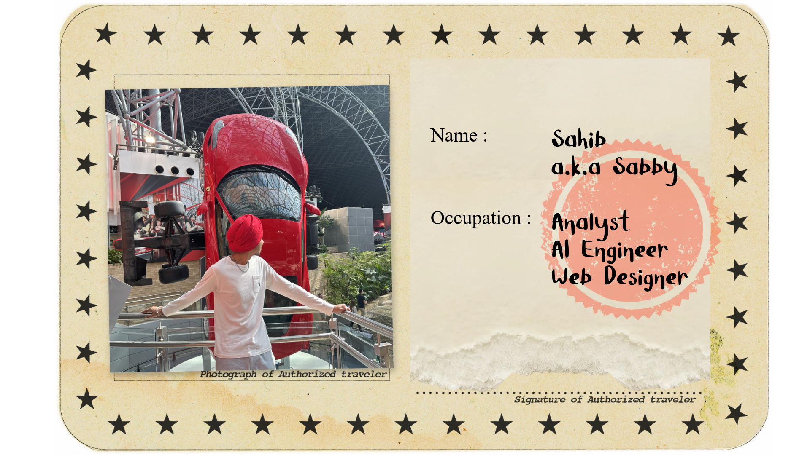

Task-Aware Compression
A content-adaptive compression architecture that prioritizes machine perception while reducing storage requirements.
Currently under benchmarking
heyy! I’m
SAHIB

01
A screensaver that runs natively on your computer.

02
A music manager for mp3 players.

Electron · TypeScript · React
03
An agentic AI that runs your desktop based on the identity of a friend you give it.

Data Analytics & Process Automation Intern
Data Analyst Intern
Intelligent desktop apps, AI assistants, and workflow automation.
Python · Ollama · n8n · Electron
Cross-platform software with thoughtful interfaces.
Electron · React · TypeScript
Analytics, predictive models, and computer vision.
Python · Pandas · scikit-learn · Power BI
A content-adaptive compression architecture that prioritizes machine perception while reducing storage requirements.
Currently under benchmarking
Exploring how analytics, ergonomics, and user research can shape products people genuinely enjoy using.
LET’S CONNECT
© 2026 Sahib / Sabby